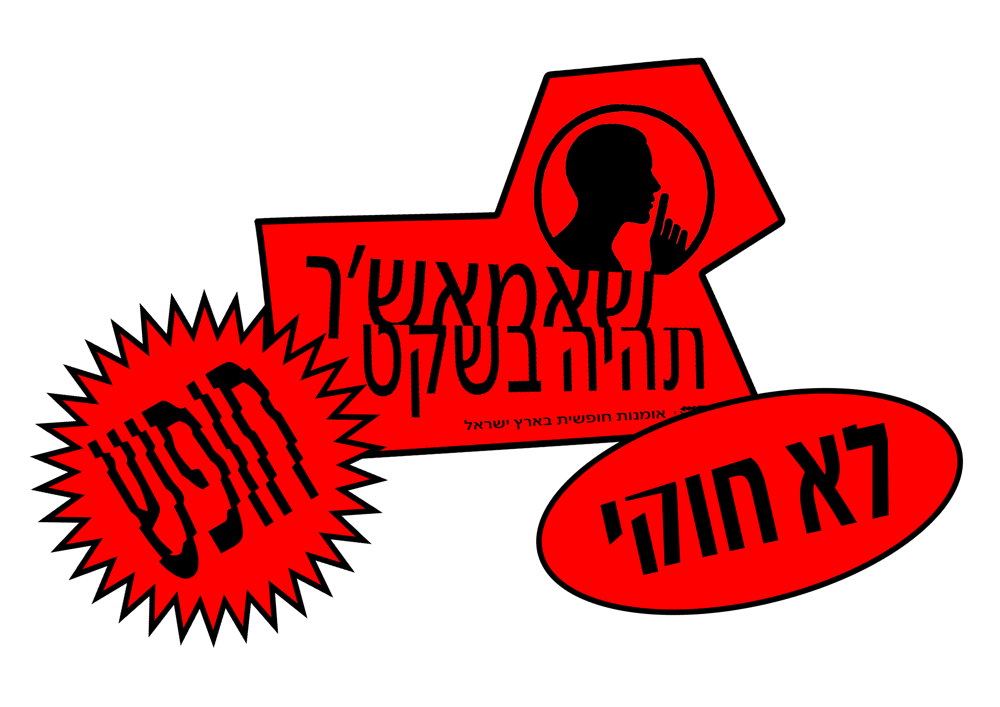
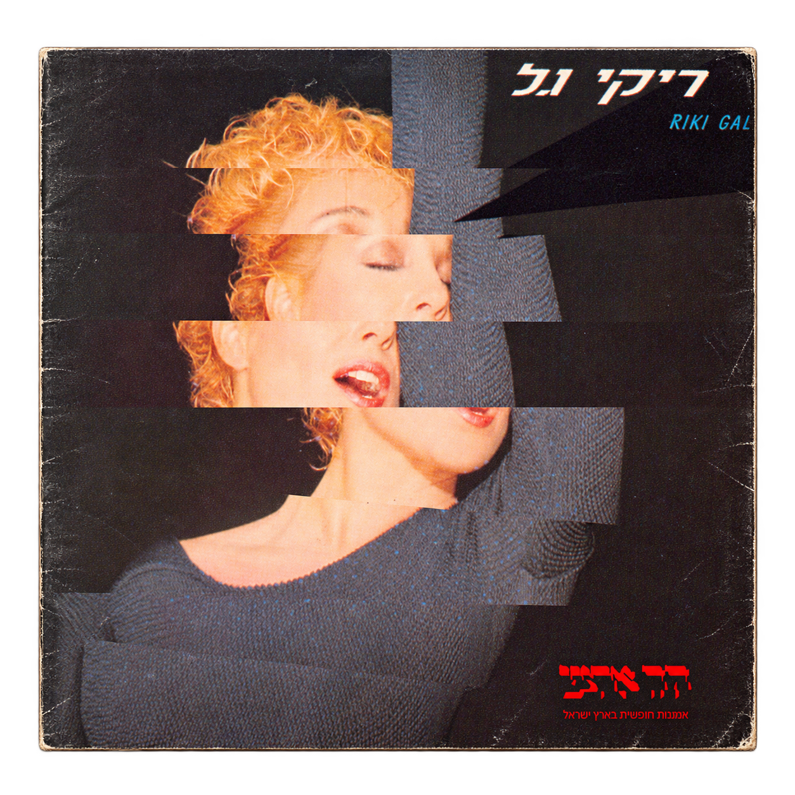
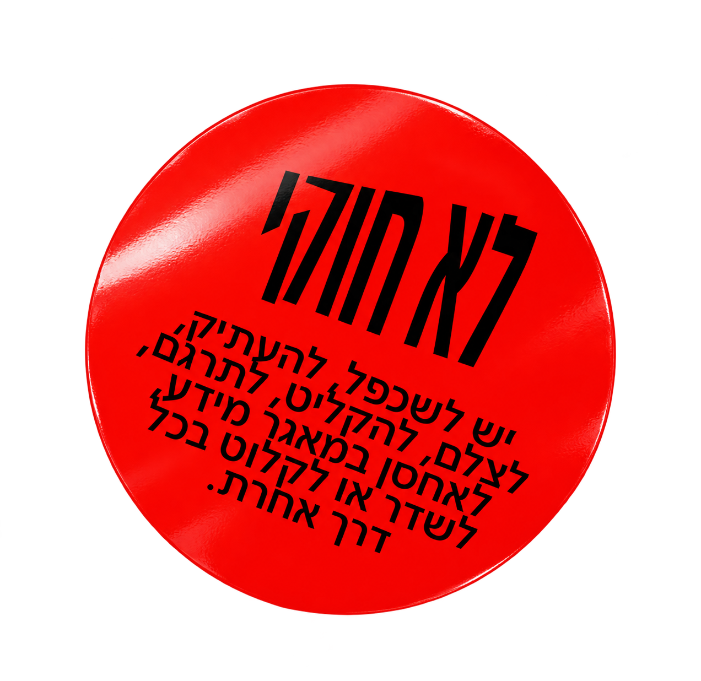
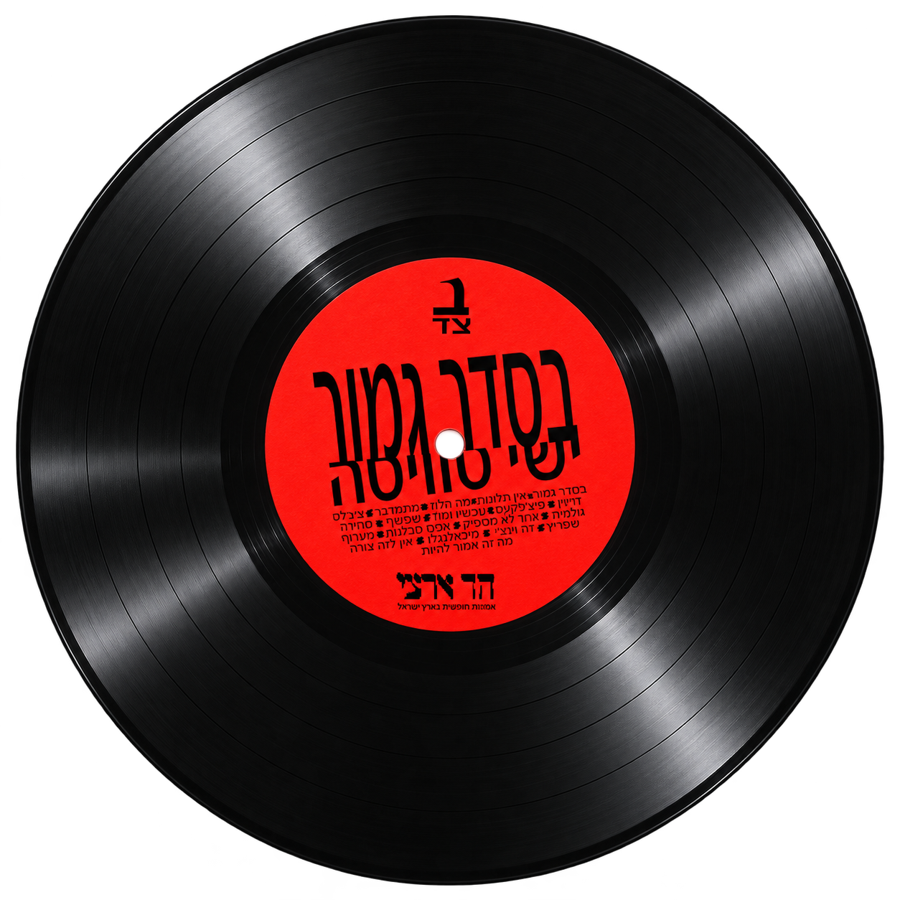
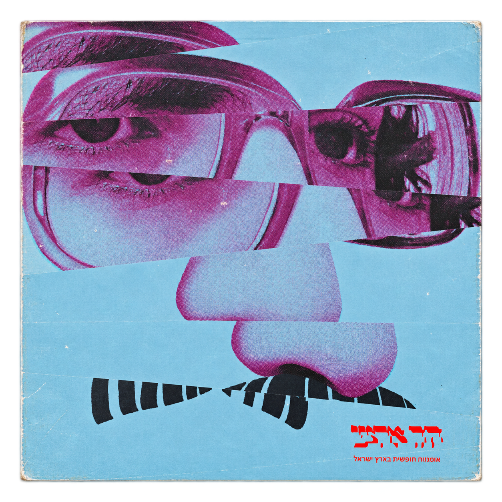

HED ARTZI
an iconic national music label
transforming into a resistance movement
A speculative rebranding of Hed Artzi, an iconic Israeli music label, set in an imagined future where Israel has become a dictatorship and independent artistic expression is forbidden.
In this reality, Hed Artzi goes underground, transforming into a secret cultural movement dedicated to preserving and spreading free Israeli culture. With citizens under constant surveillance, music is distributed through underground events and analog formats, beyond the reach of digital monitoring.
The project explores the role of creativity in a broken reality, and how a brand's identity can shift in response to political change.
In collaboration with Sahar Barel.
The poster for the event “industrial peace”.

“Industrial Peace 2026” is a line of illegal underground cultural events held under the radar of the authorities. Featuring live shows and the distribution of banned music and cultural materials, celebrating the brand’s spirit and the fight for creative freedom.
Animated Event Poster
Manifesto for Freedom of Creativity and Expression
The record sleeve designs reinterpret the original covers through cutting, and visual distortion.
A Bag Containing a Vinyl Record, with a Sticker and Receipt.

Stickers for Distribution in Public Spaces.

The record sleeve designs reinterpret the original covers through cutting, and visual distortion.
Recognizing the iconic status of album covers, we aimed to disrupt their familiar imagery while preserving their visual value.





F00TBALL